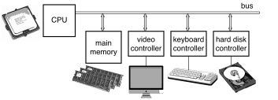
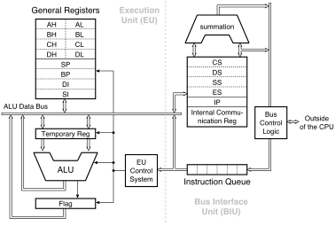
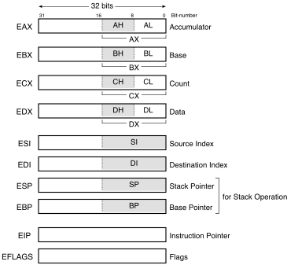
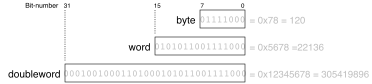

i386アーキテクチャの基礎知識
何を学ぶ必要があるか
この授業ではアセンブリ言語プログラミングを扱うが，具体的な目的の一つは「コンパイラの翻訳先言語を知る」ことだ。コンパイラはいわば「ある言語（例えば日本語）から別の言語（例えばフランス語）への自動翻訳システム」であり，コンパイラの働きを理解するためにはまず翻訳先言語のことを知らなければならない。 ただし，翻訳先言語を流暢に使いこなす必要はなく，条件分岐，反復，変数，配列，四則演算，関数，などが機械語ではどう表されるかがわかれば十分だ。
i386アーキテクチャ
一般に，機械語命令はコンピュータごとに異なる。 「どういうビットパターンを読み出したとき，どういう動作をするか」が論理回路として作り込まれているからで，ハードウェアの設計がちがえばその「命令解釈装置」も異なるからだ。 逆に，「命令解釈装置」が同じなら機械語命令も同じだ。 コンピュータの心臓部である命令解釈装置と演算装置を内蔵した部品を CPU（中央処理装置; Central Processing Unit）と言う。 つまり，CPUが同じなら機械語命令も同じと言える。
前章で説明した機械語プログラムはすべて Intel 80386 CPU（略して i386）に対するものだ。「b8 04 00 00 00 は0番レジスタに4を書き込む命令」といった話は i386 にだけ通用し，他の CPU を搭載するコンピュータには当てはまらない。例えば，この授業の第II部で使う Raspberry Pi は ARM CPU を搭載しており，i386とは機械語命令が異なる。i386用機械語プログラムはARMでは動かないし，逆も同じだ。 i386用のCコンパイラはi386の機械語プログラムを出力するよう作られているし，ARM用のCコンパイラはARMの機械語プログラムを出力するよう作られている。
（正確には，「i386」も「ARM」も一つのCPUを指すのではなく，同じ機械語命令セットを持つCPU群を指している。各群に属するCPUを「i386アーキテクチャのCPU」「ARMアーキテクチャのCPU」とも言う。）
CPUを決めないと機械語 / アセンブリ言語も具体的に決まらないので，この授業の第I部ではWS室のLinuxコンピュータ（に搭載されている i386 CPU）用のアセンブリ言語を題材として使う。ただし，この授業で扱う機械語命令は基本的なものだけなので，どのCPUでも（ニーモニックが違ったり細かい違いはいろいろあるが）だいたい同じだ。第II部ではRaspberry Pi（に搭載されている ARM CPU）用のアセンブリ言語を扱う。
- 参考：上記以外の「身近な」CPUとして，「情報処理技術者試験」で用いられる COMET II（アセンブリ言語の名前は CASL II）がある。
『試験で使用する情報技術に関する用語・プログラム言語など』ver2.3 の「別紙1 アセンブラ言語の仕様」を参照。
- COMET II は，仕様書があるだけで実物のない仮想的CPUだ。 上記仕様はたった6ページしかなく，「CPUに必要な機能」を極めて簡潔に記述した文書にもなっている。一度読んでみることをお奨めする。
コンピュータの内部
コンピュータ内部は，単純に言えば，CPUとその他の装置がバス (bus) という信号線で互いに接続された構造をしている。
- 参考：コンピュータシステムの構成 （Tanenbaum 著『Modern Operating Systems』2nd Ed., Prentice-Hall, 2001, p.21, Fig.1-5を参考に作成）

コンピュータによって行われていることは，基本的にすべて「CPUと他の装置の間の情報の送受信」だ。プログラムは主記憶装置の中に格納され，1命令ずつCPUに読み出される。その命令に従って，CPUの中で計算を行ったり，他の装置に情報を送信したり逆に受信したりする。例えば画像コントローラに情報を送れば，それが画像となって表示される。
CPUの内部
機械語 / アセンブリ言語を学ぶためには，CPU内部にどんな装置があるか（つまり，機械語命令によってどういう装置を使えるか），大まかに知っておく必要がある。 下図は，i386 の前身である 8086 CPUの内部構造を示している（古いCPUの方が構造が単純でわかりやすい。ただし，8086の基本データ幅は16ビット，i386は32ビットなので注意）。
- 参考：Intel 8086 の内部ブロック図 （相沢 著『8086ファミリ・ハンドブック』CQ出版社, 1989, p.16, 図2-1を基に作成）

CPUの外にある主記憶装置から機械語命令が読み出され，右下のInstruction Queue（8086では6バイト）に格納される。機械語命令のビットパターンに応じて，EU Control Systemが実行ユニット (EU) 内の各装置を動作させる。 実行ユニットの主な構成要素は汎用レジスタ (General Registers) と算術論理演算装置 (Arithmetic logic unit; ALU) だ。
- レジスタ: CPU内部に作り付けられた記憶装置。被演算数や演算結果などの一時的な保存場所として使う。
ALU: 加減算やブール演算を行う論理回路。被演算数がTemporary Registerに格納されている状態でEU Control Systemが演算の種類を選択すると，演算結果のビット列が出力される。演算結果は，ALU Data Busを経由して汎用レジスタ等に書き込まれる。
参考：WikiPedia:74181 / 74LS181 Datasheet — （70年代の）ALU単体製品
機械語命令で行えることはおおよそ以下の事柄だ。
- レジスタに数を代入する。
- レジスタの値を被演算数として演算し，結果をレジスタに格納する。
- 主記憶装置からレジスタへ，またはレジスタから主記憶装置へ，値をコピーする。
- 機械語命令を読み出す位置を変更する（条件分岐やループや関数呼び出しのため）。
「機械語命令を読み出す位置」は命令ポインタ (Instruction Pointer; IP) という特殊レジスタに格納され，1命令実行するたびに更新される。「機械語命令を読み出す位置を変更」とは IP の値を変更することに当たる。（CPUによっては Program Counter, PC と呼ぶこともある。）
i386のレジスタ
レジスタのビット幅や個数（やアセンブリ言語でのレジスタ名）はCPUごとに大きく異なる部分だ。 なので，新しいCPUを扱う場合はまずどのようなレジスタセットを持っているか調べることになる。
i386 は32ビットの汎用レジスタを8個持っている（下図） （EIP, EFLAGSは特殊レジスタ。それ以外が汎用レジスタ）。

アセンブリ言語では，レジスタ番号ではなく，EAX, EBX, ECX, EDX, ESI, EDI, ESP, EBP という名前でレジスタを表す（大文字でも小文字でもよい）。
汎用レジスタのうち，ESPとEBPは特別な用途（スタックの操作）に使うので，通常の計算には残りの6レジスタを使う。
EAXの下位16ビットを AX という名前のレジスタとして使うことができる。さらに，AX の上位8ビット，下位8ビットをそれぞれ AH, AL という名前のレジスタとして使うことができる。EBX, ECX, EDXも同様。ESI, EDIの下位16ビットもSI, DIという名前のレジスタとして使うことができるが，SI, DIの中を8ビットレジスタに分けることはできない。
バイト，ワード，ダブルワード
ビット幅を表す用語を覚えておこう。 i386では，8ビット，16ビット，32ビットのビット列をそれぞれ バイト (byte)，ワード (word)，ダブルワード (doubleword) と呼ぶ。 レジスタEAX, EBX, ... はダブルワードを格納できる。AX, BX, ... はワードを，AH, AL, BH, BL, ... はバイトを格納できる。
ビット列の中の1ビットだけを指定するときは，下位から順に，ビット0，ビット1，ビット2，…と付けた番号で指定する。バイトの最上位ビットはビット7，ワードの最上位ビットはビット15，ダブルワードの最上位ビットはビット31だ（下図）。

ほかにも機械語プログラムを扱うのに必要な事柄がいくつかあるが，それらはその都度説明することにして，次の章からさっそくアセンブリ言語プログラムを作ってみよう。